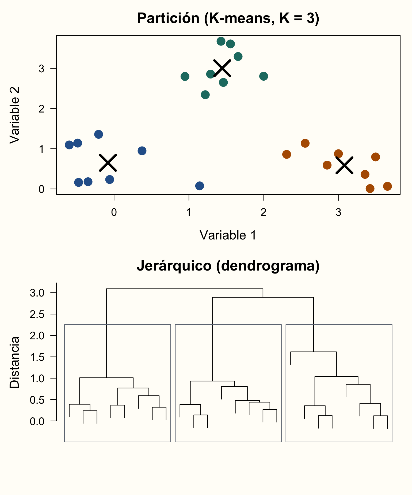
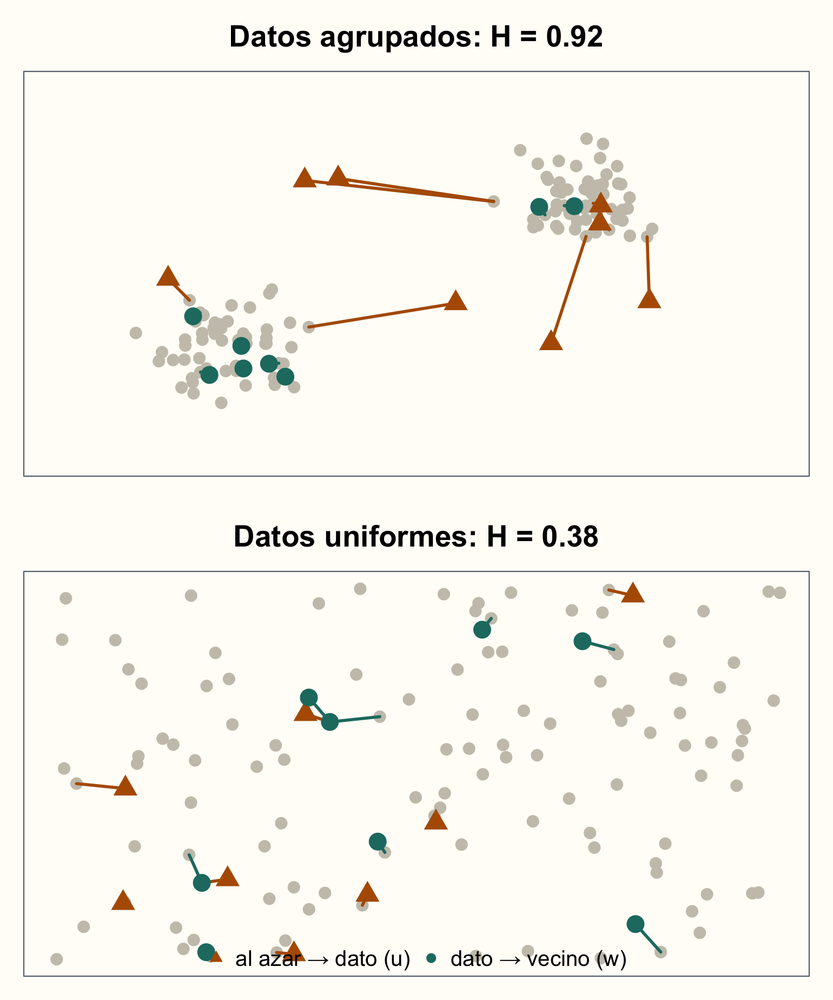
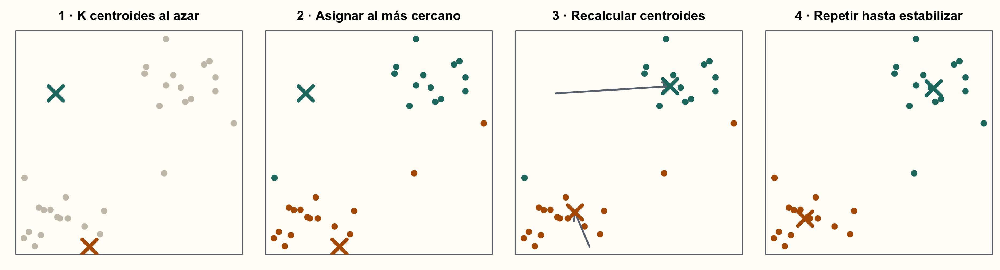
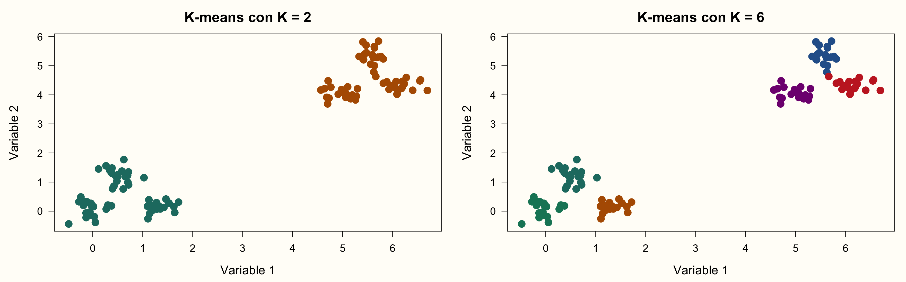

Estadística multivariante 2
Bioestadística · Clase 11
Prof. Javier Lopatin · javier.lopatin@uai.cl
Un mundo multivariante
Estadística multivariante
El mundo en el que vivimos no es de una sola dimensión, es multivariante, con múltiples dimensiones, con muchos datos cruzándose todo el tiempo y con medidas de más de una variable aleatoria.
Definición formal: «rama de la estadística que abarca la observación y el análisis simultáneos de más de una variable respuesta».
Hay dos aplicaciones típicas:
Reducción de información Feature reduction – Ordenación (ordination): clase 10.
Clustering Agrupación de clases de datos homogéneos: hoy.
¿Qué es el clustering?
Clustering
El término clustering es también conocido como clasificación no supervisada, y hace referencia a un amplio abanico de técnicas cuya finalidad es encontrar patrones o grupos discretos (clusters) uniformes u homogéneos dentro de un conjunto de observaciones.
Particiones Las observaciones dentro de un mismo grupo son similares entre ellas y distintas a las observaciones de otros grupos.
Sin variable respuesta No se requiere de una variable observada: la partición de los grupos es totalmente derivada de los datos.
Tres grupos principales
Clustering · Tipos
Partitioning clustering El usuario especifica de antemano el número de clusters (K-means, K-medoids, CLARA).
Hierarchical clustering No requiere fijar de antemano el número de clusters (aglomerativo, divisivo).
Combinaciones Hierarchical K-means, fuzzy clustering, model based y density based clustering.

¿Ordenación o clustering?
Tu turno · Discusión
⏱ 3 min · en parejas
Para cada pregunta, ¿usarían ordenación (clase 10), clustering (hoy) o ambos?
- ¿Cuáles son los principales gradientes de composición de especies en 40 lagunas?
- ¿Existen tipos de bosque distintos según la cobertura de 80 especies?
- Resumir 2000 bandas espectrales en unas pocas variables para un modelo.
- Clasificar parcelas de una turbera en asociaciones vegetacionales y describirlas.
- Ordenación (gradientes continuos). 2. Clustering (grupos discretos). 3. Ordenación (reducir variables). 4. Ambos: primero ordenar y luego agrupar sobre los ejes; es lo que haremos al final de la clase.
¿Debo hacer clustering?
Parte 1 · Tendencia a la agrupación
¿Qué es una semilla?
Práctico 13 · Inicio
Muchas funciones de hoy usan números aleatorios (datos simulados, inicio de K-means, NMDS, Hopkins).
set.seed() fija el punto de partida del generador de números aleatorios: con la misma semilla se obtienen siempre los mismos resultados (reproducibilidad).
Los datos: iris y datos aleatorios
Práctico 13 · Datos
Vamos a comparar la posibilidad de hacer clustering con datos agrupados (iris) y aleatorios (random_df).
PCA: ¿se ven grupos?
Práctico 13 · PCA
Variables y biplot
Práctico 13 · PCA
El estadístico de Hopkins
¿Debo hacer clustering? · Hopkins
Estima la tendencia a la agrupación comparando la distancia de puntos al azar (uniformes) a su dato más cercano (u) con la de datos reales a su vecino más cercano (w): comprueba la aleatoriedad espacial de los datos.
H = Σu / (Σu + Σw)
H0: los datos están distribuidos uniformemente (no hay conglomerados). H1: no están distribuidos uniformemente (contienen conglomerados).

Cuidado con el umbral de 0,5
¿Debo hacer clustering? · Hopkins
OJO: algunas funciones de R entregan H y otras entregan 1 − H. El valor de referencia es 0,5 (datos al azar), pero se lee al revés: con H, valores cercanos a 1 indican grupos; con 1 − H, valores cercanos a 0.
¡Revisar siempre qué significa el método a usar!
| Función | Entrega | Agrupable | Al azar |
|---|---|---|---|
factoextra::get_clust_tendency() |
H | cerca de 1 | ≈ 0,5 |
hopkins::hopkins() |
H (+ valor p con hopkins.pval()) |
cerca de 1 | ≈ 0,5 |
clustertend::hopkins() (obsoleto) |
1 − H | cerca de 0 | ≈ 0,5 |
Hopkins en R: H
Práctico 13 · Hopkins
Hopkins en R: 1 − H
Práctico 13 · Hopkins
Los mismos datos, lecturas opuestas.
iris: 0,17 con clustertend (lejos de 0,5 hacia 0) y 0,997 con hopkins (lejos de 0,5 hacia 1): agrupable en ambos casos.
Datos aleatorios: ≈ 0,5 con las dos.
¿Grupos o no uniformes?
Tu turno · Predecir y verificar
⏱ 4 min · en parejas
Antes de ejecutar: ¿cuánto valdrá H en cada conjunto? ¿Cuál tiene grupos?
unif ≈ 0,50 (p ≈ 0,98) · dos ≈ 0,99 (p ≈ 0) · nube ≈ 0,69 (p ≈ 0,003). La nube normal no tiene grupos, pero tampoco es uniforme: Hopkins rechaza H0. Rechazar la uniformidad no prueba que haya clusters: hay que mirar los datos (VAT, ordenación).
Método visual: VAT
¿Debo hacer clustering? · Método visual
El algoritmo «visual assessment of cluster tendency» (VAT) (Bezdek y Hathaway, 2002):
1 · DM Calcular una matriz de disimilaridad (DM) usando la distancia euclidiana.
2 · ODM Reordenar la DM para que los objetos similares estén cerca unos de otros: matriz de disimilaridad ordenada (ODM).
3 · ODI La ODM se presenta como una imagen de disimilitud ordenada (ODI): el resultado visual de VAT.
En R: la matriz con dist() y la imagen con fviz_dist() [paquete factoextra].
VAT en R: iris vs. aleatorios
Práctico 13 · Interpretación visual
¿Cuántos bloques ven en iris? ¿Coincide con las 3 especies?
K-means
Parte 2
K-means clustering
K-means
El método K-means (MacQueen, 1967) agrupa las observaciones en K clusters distintos, donde el número K se determina antes de ejecutar el algoritmo.
Encuentra los K mejores clusters: aquellos cuya varianza interna (intra-cluster variation) sea lo más pequeña posible.

Un problema de optimización
K-means
Se reparten las observaciones en K clusters de forma que la suma de las varianzas internas de todos ellos sea lo menor posible. Para eso hay que definir un modo de cuantificar la varianza interna.
Mínimo global Minimizar la varianza interna de forma exacta es complejo: hay una inmensa cantidad de formas de dividir n observaciones en K grupos.
Óptimo local Es posible obtener una solución que, aun no siendo la mejor de todas, es muy buena.
En R, kmeans() usa la suma de cuadrados dentro de cada cluster (withinss); su total es tot.withinss.
K-means a mano
Tu turno · Predecir y verificar
⏱ 3 min · en parejas
Seis observaciones en una sola variable:
1 · 2 · 3 · 10 · 11 · 12
Centroides iniciales: 1 y 2.
Hagan a mano los pasos 2 y 3 hasta que nada cambie. ¿Qué grupos y qué centroides quedan?
1.ª vuelta: {1} y {2, 3, 10, 11, 12} → centroides 1 y 7,6. 2.ª vuelta: {1, 2, 3} y {10, 11, 12} → centroides 2 y 11. Ya no cambia. Suma de cuadrados interna: 1 + 0 + 1 + 1 + 0 + 1 = 4.
Verifíquenlo en R:
Ventajas y desventajas
K-means · Ventajas y desventajas
K-means es uno de los métodos de clustering más utilizados: destaca por su sencillez y velocidad. Pero tiene limitaciones:
1 · Hay que fijar K de antemano Puede ser complicado sin información adicional sobre los datos. Hay estrategias para estimar K óptimo (parte 3), aunque todas son orientativas.
2 · Depende del inicio aleatorio Los grupos pueden variar según los centroides iniciales. Se recomienda repetir 25–50 veces (nstart) y quedarse con el de menor varianza interna, y usar semillas (set.seed()) para que sea reproducible.
3 · Poco robusto frente a outliers La única solución es excluirlos o usar métodos más robustos como K-medoids (PAM).
En vivo: el inicio aleatorio
K-means · R en el navegador
Con un solo inicio (nstart = 1), cada semilla puede llevar a otro óptimo local. Cambien la semilla y ejecuten de nuevo; luego prueben nstart = 25.
¿Por qué no siempre da lo mismo? ¿Qué solución elegirían?
Cada inicio converge a un óptimo local. Se elige el de menor tot.withinss: eso hace nstart = 25 automáticamente.
¿Con cuál te quedas?
Tu turno · Discusión
⏱ 3 min

Las dos opciones son buenas: las clases no se sobreponen. ¿Con cuál te quedas y por qué?
Ambas particiones son «válidas»: elegir K depende de la pregunta y de la información previa (¿dos tipos de hábitat o seis comunidades?). Por eso necesitamos criterios para elegir K: la parte siguiente.
K-means en R
Práctico 13 · K-means
kmeans1$cluster: el grupo de cada flor.
kmeans1$tot.withinss: la suma de cuadrados interna total (lo que K-means minimiza).
Otros elementos: centers (centroides), size (tamaño de cada grupo), withinss (por grupo).
¿Coinciden los grupos con las especies? Las flores 1–50 son setosa, 51–100 versicolor y 101–150 virginica.
Número óptimo de clusters
Parte 3
¿Cuántos clusters?
Número óptimo de clusters
Determinar el número óptimo de clusters es uno de los pasos más complicados, sobre todo en partitioning clustering, donde el número se tiene que especificar antes de poder ver los resultados.
No existe una forma única de averiguarlo: es un proceso bastante subjetivo, que depende del tipo de clustering y de la información previa (estudios anteriores pueden sugerir o acotar las posibilidades). Hay varias estrategias que ayudan:
| Método | Mide | Mejor K | En R |
|---|---|---|---|
| Codo (elbow) | varianza intra-cluster (wss) | donde la curva deja de caer | method = "wss" |
| Silueta | qué tan bien cae cada punto en su grupo | máximo | method = "silhouette" |
| Gap statistic | wss comparado con datos al azar | primer K que no mejora claramente (línea punteada) | method = "gap_stat" |
NbClust() |
30 índices a la vez | el más votado | index = "alllong" |
El método del codo
Número óptimo de clusters · En R
El método Elbow calcula la varianza total intra-cluster en función del número de clusters y escoge como óptimo aquel valor a partir del cual añadir más clusters apenas consigue mejoría.
fviz_nbclust() (factoextra) automatiza el proceso con la suma de residuos cuadrados internos (wss): más bajo es mejor, pero siempre baja al aumentar K.
Silueta y gap statistic
Número óptimo de clusters · En R
Silueta: el K con el valor más alto. Gap: no se elige el máximo de la curva (en iris está en K = 13), sino el primer K cuyo gap no es claramente menor que el del siguiente, considerando su error estándar (regla «firstSEmax»). La línea punteada marca el K elegido: 2 en ambos.
Muchos índices a la vez: NbClust()
Número óptimo de clusters · En R
NbClust() (paquete NbClust) calcula hasta 30 índices en un paso; cada uno «vota» por un número de clusters: así se ve en qué valor coinciden más índices.
Argumento index: un índice ("kl", "ch", "hartigan", "silhouette", "gap", "dunn", …) o todos: "all" (todos excepto gap, gamma, gplus y tau, que son lentos) o "alllong" (todos).
Resultados: ¿qué flores van en cada grupo?
Práctico 13 · Resultados
¿Por qué 2 y no 3?
Tu turno · Interpretar
⏱ 3 min · en parejas
Hay 3 especies de iris, pero la silueta, el gap (con su regla, la línea punteada) y la mayoría de los índices de NbClust eligen 2 clusters.
¿Por qué? ¿Está «mal» el clustering? Usen el PCA, el VAT y la tabla cluster × especie.
Setosa es muy distinta (pétalos chicos) y forma un grupo aparte; versicolor y virginica se sobreponen en las cuatro medidas. El clustering encuentra los grupos que están en los datos, no los que nosotros conocemos: no está «mal», responde otra pregunta. Si sabemos que hay 3 especies, podemos fijar K = 3 (como en kmeans1), pero los grupos no serán perfectos.
Completen el K-means
Tu turno · Completar el código
⏱ 4 min
Corran K-means con 3 grupos y 25 inicios, y comparen con las especies.
centers: número de grupos, entero sin comillas (2, 3, …). nstart: número de inicios aleatorios, entero sin comillas (se recomienda entre 25 y 50). table(): dos vectores del mismo largo, p. ej. km$cluster y iris$Species.
El grupo de cada flor está en el elemento cluster del resultado: km$cluster.
¿Qué especie queda perfectamente separada? ¿Cuáles se confunden y cuántas flores?
Ordenación + clustering
Parte 4
Ordenación + clustering
PCA y K-means
En general los algoritmos de clustering no funcionan bien con muchas variables. La combinación con métodos de ordenación es muy útil.
Ejemplo: datos foliares de pigmentos (clorofila, carotenoides, contenido de agua, …) con datos hiperespectrales tomados por espectroscopia de campo (reflectancia = 2051 variables).
Idea: reducir las 2051 bandas con un PCA y aplicar K-means sobre los primeros componentes.

Cargar los datos de hojas
Práctico 13 · Espectroscopia de campo
Ojo: este pca reemplaza al de iris.
NbClust sobre PC1 y PC2
Práctico 13 · Cluster
Clusters sobre el PCA
Práctico 13 · Plot
¿Qué distingue a cada grupo de hojas?
Tu turno · Interpretar
⏱ 3 min
Con el gráfico y la tabla de envfit de la lámina anterior:
Describan cada cluster de hojas usando los rasgos. ¿Qué rasgo separa mejor los dos grupos?
Los grupos se separan a lo largo de PC1. Los vectores de Cw (contenido de agua, r² = 0,81) y Cm (materia seca, r² = 0,58) apuntan hacia el grupo de la izquierda: hojas con más agua y materia seca (118 hojas); el grupo de la derecha tiene menos (158). N (r² = 0,89) apunta sobre todo a lo largo de PC2, así que varía dentro de cada grupo más que entre grupos.
Turbera de Chiloé: los datos
Práctico 13 · Turbera con NMDS
Mediciones de carbono del suelo, biomasa aérea, riqueza y cobertura de especies en 36 parcelas de una turbera de Chiloé.
NMDS: ¿cuántos ejes?
Práctico 13 · Turbera con NMDS
Valores de stress bajo 0,15 son deseables: seleccionamos 3 dimensiones.
NMDS con k = 3 y envfit
Práctico 13 · Turbera con NMDS
K-means sobre el NMDS
Práctico 13 · K-means
Asociaciones vegetacionales
Práctico 13 · Plot con clases
Describan las asociaciones
Tu turno · Interpretar
⏱ 4 min · en parejas
Con el gráfico y la tabla de promedios por grupo de la lámina anterior:
Pónganle un nombre a cada uno de los 4 grupos de parcelas. ¿Cuál guardaría más carbono? ¿Cuál es más diverso?
Grupo 1: vegetación alta, con más biomasa (1,7) y carbono (14,8). Grupo 2: biomasa baja y el menor carbono (8,3). Grupos 3 y 4: vegetación baja, con la mayor riqueza (12 especies); el 4 es el más bajo (12 cm). Cada cluster es una asociación vegetacional que se puede describir con las variables medidas.
¿Qué especies hay en cada grupo?
Práctico 13 · Interpretación
Las especies con valores negativos en el eje 1 (Philesia, Uncinia, Sticherus…) están del lado de altura y biomasa; las positivas (Prunella, Leptinella, Anagallis…) del lado de la riqueza.
Con esto se puede deducir qué especies dominantes corresponden a cada asociación y cuáles tienen, por ejemplo, más carbono y altura de canopia.
Prueben: sort(nmds$species[,2]).
Desafío: pingüinos
Tu turno · Aplicar
⏱ 10 min · en parejas
penguins (incluido en R): largo y alto del pico, largo de la aleta y masa corporal de 342 pingüinos de 3 especies (Adelie, Chinstrap, Gentoo) del archipiélago Palmer, Antártica.
method: "wss" (codo) · "silhouette" (silueta) · "gap_stat" (gap), entre comillas. centers: un número entero sin comillas, el K que elijan con el paso 2. Hopkins: H cercano a 1 = agrupable.
Usen la silueta ("silhouette"): elijan el K con el valor más alto. Prueben también con el número de especies.
p <- na.omit(penguins[, c("species", "bill_len", "bill_dep", "flipper_len", "body_mass")])
X <- scale(p[, -1])
set.seed(123)
hopkins::hopkins(X, m = 50) # ~0.98: agrupable
set.seed(123)
fviz_nbclust(X, kmeans, method = "silhouette", k.max = 10) # K = 2
set.seed(123)
km <- kmeans(X, centers = 2, nstart = 25)
table(cluster = km$cluster, especie = p$species)
# K = 2: Gentoo sola; Adelie + Chinstrap juntas.
# con centers = 3: Gentoo perfecta; Adelie y Chinstrap se mezclan en parteEscriban 2–3 líneas: ¿cuántos grupos hay en los datos y por qué no coinciden del todo con las especies?
Resumen
Cierre
| Paso | Pregunta | En R |
|---|---|---|
| 1 · Tendencia | ¿Hay grupos o los datos son al azar? | hopkins::hopkins(), fviz_dist(dist(X)) |
| 2 · Número de clusters | ¿Cuántos grupos? | fviz_nbclust(), NbClust() |
| 3 · Agrupar | ¿Qué observación va en cada grupo? | kmeans(X, centers, nstart = 25) |
| 4 · Interpretar | ¿Qué distingue a cada grupo? | ordenación + envfit(), aggregate() |
Con muchas variables: primero ordenar (PCA, NMDS), luego agrupar sobre los ejes. Escalen los datos, fijen la semilla y revisen si su función entrega H o 1 − H. Todo el código está en Practicos/13_multivariante2.R.
Ticket de salida
Tu turno · Cierre
⏱ 3 min · individual
Respondan en una línea cada una:
- Un compañero obtiene H = 0,15 con una función de Hopkins y concluye que sus datos no son agrupables. ¿Qué le preguntarían?
- ¿Por qué se usa
nstart = 25enkmeans()? - Tienen coberturas de 120 especies en 50 parcelas y quieren encontrar comunidades vegetales. ¿Qué pasos siguen?
- ¿Qué entrega la función, H o 1 − H? Con 1 − H, 0,15 indica datos agrupables. 2. Porque el resultado depende del inicio aleatorio: se repite 25 veces y se queda con la menor varianza interna. 3. Bray-Curtis → NMDS (elegir k por stress) → número de clusters (
NbClust) → K-means sobre los ejes → interpretar conenvfity promedios por grupo.
Tu espacio
R en el navegador · Libre
Escriban y ejecuten su propio código. La sesión de R es la misma de toda la clase: df, random_df, kmeans1, clusters1, traits, reflec, cob_data, veg_data y nmds ya están cargados.

Bioestadística · Clase 11 · Estadística multivariante 2